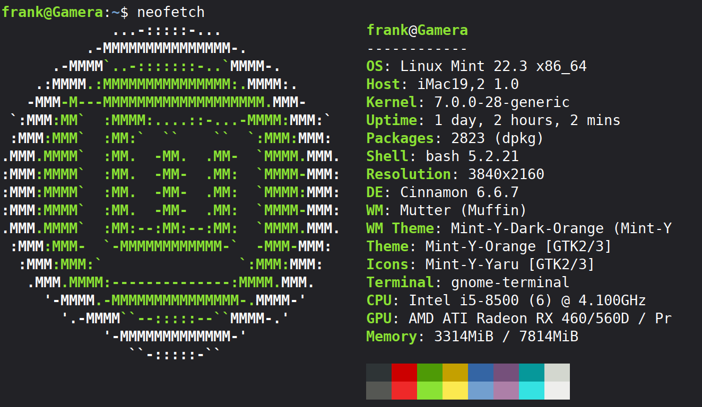

Mein iMac von 2019 ist mit 3,0 GHz 6‑Core Intel Core i5 und 8 GB RAM zwar nicht mehr auf dem aktuellen Stand, aber für meine Anforderungen immer noch ein brauchbarer Computer. Wäre da nicht das immer langsamere MacOS, das zum Teil auf das eingebaute Fusion Drive zurückzuführen ist. Ich habe alle von mir im Internet auffindbaren Lösungsversuche ausprobiert, eine merkbare Verbesserung hat aber alles nicht bewirkt. MacOS wurde so langsam, dass arbeiten mit dem Gerät zur Geduldsprobe wurde. Zudem fühlte ich mich an meinem eigenen Computer nicht mehr zu Hause, weil mich macOS durch seine restriktiven Maßnahmen oft nervt. Also musste eine Lösung her, und die hieß Linux.
Auf Macs mit Intel-Chip ist die Installation von Linux in der Regel recht simpel. Die Ausnahme von der Regel sind allerdings Macs mit T2-Chip. Für Geräte, die diesen Sicherheitschip eingebaut haben, gibt es angepasste Linux-Distributionen. Ob dein Mac den T2-Chip eingebaut hat, kannst du auf dieser Seite nachsehen. Hier findest du eine Anleitung für Macs mit T2-Chip.
Vorbereitung
Obacht: Bevor man wilde Sachen auf seinem Computer anstellt, sollte man immer alle wichtigen Daten sichern!
Wir brauchen Balena Etcher, ein Programm mit dem bootfähige USB-Sticks erstellt werden können.
Ein Linux herunterladen. Ich habe mich für Linux Mint Cinnamon Edition entschieden, weil es eine breite Hardware-Unterstützung bietet.
Du brauchst einen USB-Stick mit mindestens 4 GB Speicherplatz.
Partitionieren
Für eine Dual-Boot-Installation müssen wir die Partition von macOS verkleinern, um Platz für Linux zu schaffen. Dazu öffnest du das Festplattendienstprogramm: Programme → Dienstprogramme → Festplattendienstprogramm.
Wähle deine interne Festplatte (die oberste Ebene, nicht das APFS‑Volume).
Klicke auf Partitionieren.
Verkleinere die macOS‑Partition um mindestens 30–60 GB.
Erstelle keine neue Partition – lasse den Bereich einfach unformatiert.
USB-Stick erstellen
Starte Balena Etcher.
Klicke auf “Flash from file”, und wähle die Linux‑ISO-Datei aus.
Wähle deinen USB‑Stick.
Klicke “Flash” und jetzt wird Linux Mint auf den Stick gepackt.
Linux installieren
Stecke den USB-Stick ein.
Halte beim Starten die Option (⌥)‑Taste gedrückt.
Wähle im Boot-Menü die Option EFI-Boot.
Wähle “Start Linux Mint”. Jetzt wird die Live-CD gestartet. Du kannst alles ausprobieren, ohne dass Änderungen am Rechner vorgenommen werden.
Klicke auf “Install Linux Mint” auf dem Desktop. Jetzt kannst du die Sprache der Installation einstellen und dich mit dem Internet verbinden.Auch die Multimedia-Treiber solltest du installieren.
Im nächsten Punkt der Installation wird erkannt, dass schon ein Betriebssystem auf dem Gerät existiert und Mint wird sich dazu installieren. Willst du macOS löschen und nur Linux Mint installieren, klicke auf “Festplatte löschen”.
Im weiteren Verlauf wird Linux Mint installiert und mit Updates versorgt. Danach kannst du den USB-Stick entfernen und den iMac neu starten. Du solltest nun ein Bootmenü sehen, indem du zwischen macOS und Linux auswählen kannst.

Schon fertig! Was ich partout nicht ans Laufen bekommen habe, sind die eingebaute WIFI-Karte und Audio. Ersteres ist nicht schlimm, da ich sowieso am Kabel hänge und Audio funktioniert seltsamerweise über einen per Bluetooth gekoppelten Lautsprecher. Damit kann ich leben. Ansonsten läuft Linux Mint auf dem iMac ziemlich flott und die iCloud ist zumindest über den Browser auch benutzbar. Insgesamt bin ich sehr zufrieden. Hier findest du noch eine sehr ausführliche und bebilderte Anleitung zur Installation.
Hinweis: Alle Angaben ohne Gewähr. Ich bin nicht schuld, wenn dein Computer explodiert.